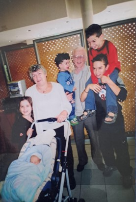
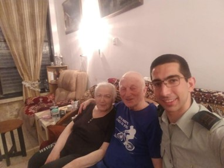
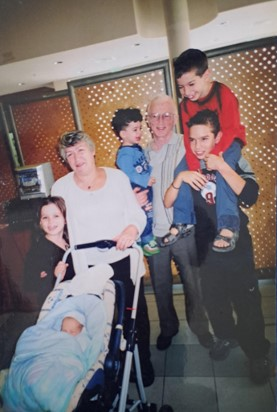
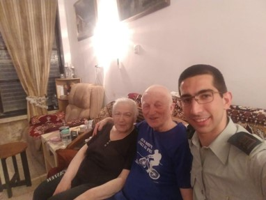
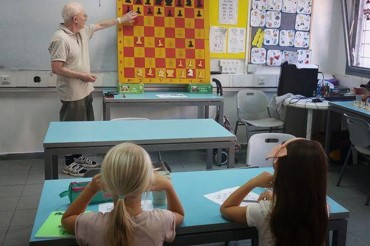
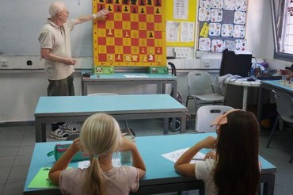

About Me
Naum Segal's journey began in a time of profound change, setting the stage for a life filled with innovation and resilience. His childhood, marked by curiosity and eagerness to learn, led him to pursue a rigorous education. From his early years, Naum demonstrated a keen intellect and a passion for technology, which would later define his career and personal pursuits.
Following his passion for engineering, Naum excelled in his studies, which laid the groundwork for his contributions to technological advancements. His commitment to his country was evident during his service in the Soviet Army, where he applied his skills in engineering to enhance communication systems, setting a precedent for his future endeavors in the field.
Naum's professional career was distinguished by his work with the engineering team at 'Orbita', where he was instrumental in developing the first portable radio in the USSR, known as 'Spidola'. His innovations did not stop there; he secured 10 patents, showcasing his relentless drive for pioneering new solutions. His technical skills were not just his career, but his calling.
An avid chess player, Naum not only competed in chess but also made significant contributions to the community. He organized 16 tournaments in memory of Mikhail Tal, wrote a book in his honor, and even participated in the World Senior Chess Championship. His dedication to chess extends to volunteering, where he continues to teach and share his love for the game, enriching the lives of many.
Outside of his professional and chess endeavors, Naum's personal life is filled with joy from his family. As a father and grandfather, he has passed on his values of education and perseverance. His leisure time is spent traveling and enjoying life, embodying his belief that learning and exploration are lifelong journeys. His 90th birthday is not just a celebration of years but of decades of impactful contributions and loving memories with family and friends.
My Photos
 



 

My Playlist
Like My Page
Scan to get a link for this site:
answer
Question 1
| קריטריון השוואה | Web 1.0 | Web 2.0 | Web 3.0 |
|---|---|---|---|
| אינטרקציה | דפים סטטיים, בעיקר לקריאה בלבד, אינטראקציה מינימלית של המשתמש | דפים דינמיים, יכולות קריאה וכתיבה, אינטראקציה גבוהה של המשתמש | התוכן אינו רק לקריאה ולכתיבה אלא גם לביצוע; דינמי ומגיב להתנהגות המשתמש |
| אחריות משתמש | נמוך| המשתמשים בעיקר צורכים תוכן | גבוה| המשתמשים צורכים וגם מייצרים תוכן (בלוגים, רשתות חברתיות) | המשתמשים תורמים לתוכן ושולטים בנתונים שלהם; שיתוף פעולה מבוזר דרך טכנולוגיות מתקדמות |
| טכנולוגיה | מבוסס על HTML ו-HTTP; דפים סטטיים ב-HTML | פלטפורמות רשתות חברתיות; תומך באפליקציות אינטראקטיביות | משתמש בטכנולוגיות מתקדמת, בינה מלאכותית ולמידת מכונה כדי ליצור חוויה חכמה וחזקה |
Question 2 - תופעות לוואי רפואיות
| קריטריון השוואה | Web 1.0 | Web 3.0 |
|---|---|---|
| אינטרקציה | משתמש מחפש תופעות לוואי של תרופות במנוע חיפוש פשוט ומקבל רשימה של דפים סטטיים. התוצאות ככל הנראה יכילו רשימת מאמרים כללית שמכילה את המילים הנ"ל | משתמש מבצע חיפוש מתקדם המנתח את ההקשר ונותן מידע מותאם אישית למשתמש הספציפי , כך שיוצג לו המאמרים שנכנסו אליהם הכי הרבה עם סטטיסטיקה שמעניינת את המשתמש |
| אחריות משתמש | "המשתמש אחראי לחפש ולעבור דרך רשימות של תוצאות באופן ידני ולמצוא "מחט בערימת שחת | המשתמש יחליט באמצעות איזה כלים הוא רוצה לשדרג את תוצאות החיפוש והסינון שלו, כמו שימוש בסינון לפי מאמר וגודלו,והאם הוא מכיל מילים מסוימות או מילים נרדפות |
| טכנולוגיה | כיוון שווב 1 משתמש רק בטכנולגיה בסיסית אז התוצאות יהיו בסיסיות בהתאם | הטכנולוגיה של ווב 3 תאפשר למשתמש לבצע את החיפוש בצורה מגוונת, וגם תציג לו את התוצאות באופן מעניין כך שיתאים למשתמש באופן אישי. לדוגמא אם המשתמש מאוד אוהב גרפים של עוגות , הוא יוכול לקבל סטטיסטיקה בצורה של עוגה לפי כמויות האנשים שנכנסו למאמר וכמה זמן הם שהו באתר כל עוד זה לא נוגד את עניין הפרטיות |